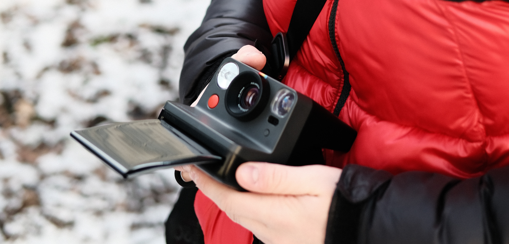
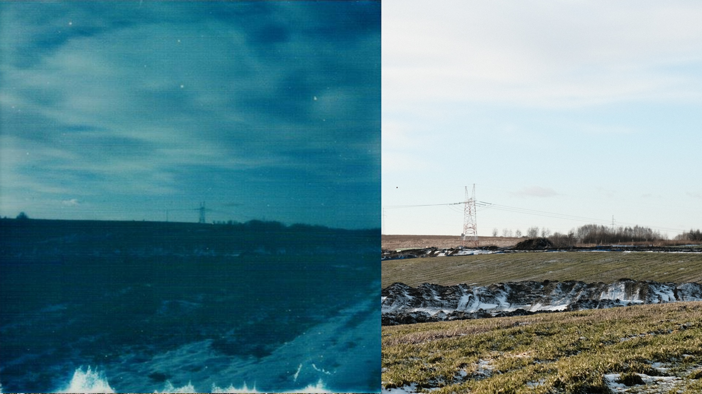
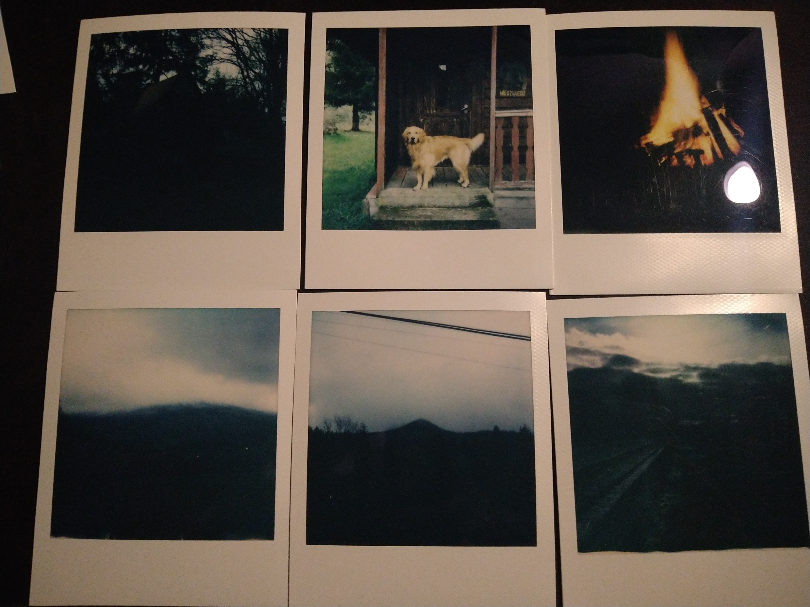
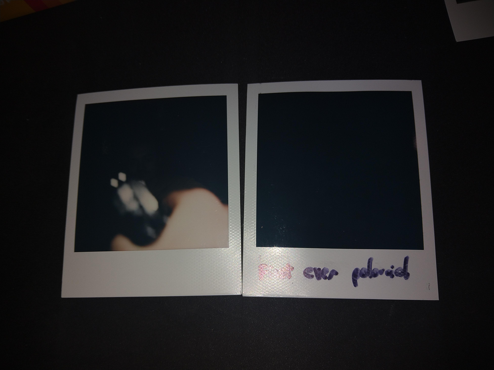
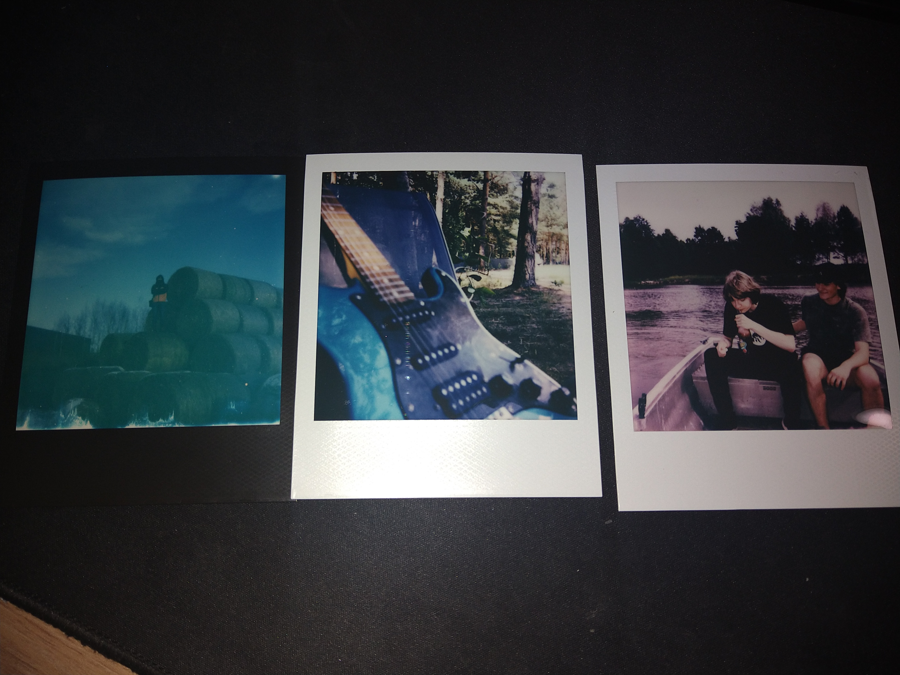
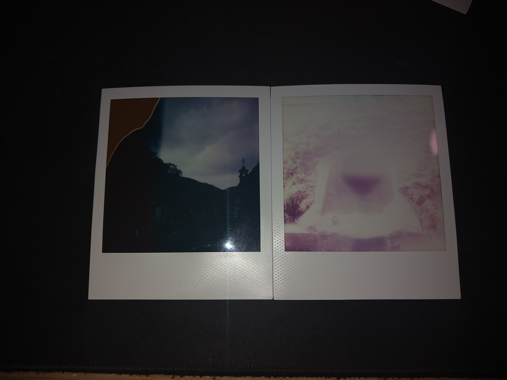
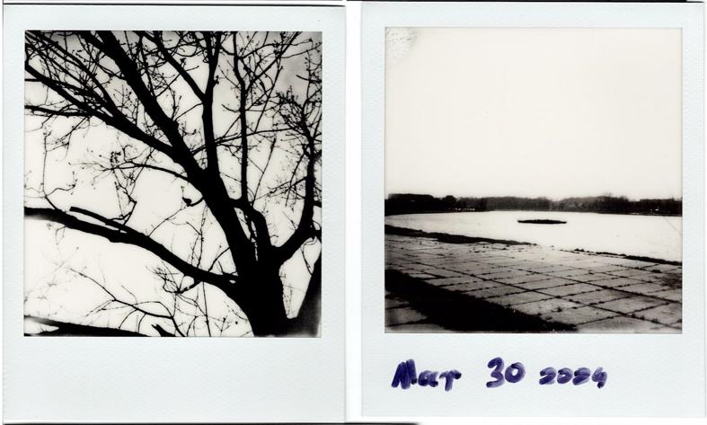

Shooting Decent Photos With Polaroid
Got too much disposable income and a taste for the 80s? This guide will tell you the basics of shooting modern Polaroid cameras.
Intro

First time I went for a photoshoot with my Polaroid Now
This guide is going to sound negative - Anyhow, It's a lot of fun to do Polaroid photography and I like this hobby - but I do want to educate about the process and drawbacks of shooting photos with a Polaroid.
Film is complicated and quirky. CMOS sensors are a blessing of their own - Phone photography may seem like a joke nowadays but It's light years technologically compared to instant film.
What you need to know about film
Film is volatile. This means a few things:
-
- You need to learn when *not* to shoot
Polaroid film is highly dependent on the light settings and temperature when taking the photo. You are bound to run into mistakes when guessing what the camera will do with the exposure settings. You will also have to fight with things like not including too much of the bright sky, or weather that just isn't good for shooting photos. Sometimes you just shouldn't take the photo, too.
-
- Film needs proper handling
You need to keep it in the fridge, you need to use it 12 months after its' production, you need to make sure you're buying from someone who actually keeps it in a cool place.
-
- Film sometimes just doesn't come out right
This doesn't happen often with modern Polaroid film in my experience, but I've had a case where the film just isn't spread properly and the photo comes out completely destroyed. Mishandling like scratching the photo too much or letting it fall into snow can also ruin it.
-
- Film is *expensive*
The most unfun part about Polaroid is telling people every photo costs 2$.
-
- Film needs to be stored well
Modern film takes a day or two to dry after taking a photo, and should be kept in the dark when not viewed to avoid damaging them.
Some photos I gave to my friend, displayed on his wall
Taking good photos - Exposure
The Now+ and Now instant cameras have a light sensor - It's the main thing that decides how long the shutter stays open. Other than that, you can also hold the flash button and click it again to adjust exposure by 1/3 stops manually.
General lighting has the most to do with exposure. Polaroid needs a LOT of light. Here's a photo on what I would call a relatively bright day:
The streaks are the bottom are just Polaroid being Polaroid. The left is a scan of the Polaroid photo done with a mediocre quality printer and the right is the same scene but with a Fuji digital camera.
That same day, I went out to take a photo of my childhood home. The sun was beginning to set, so the photo came out completely dark. This story repeats itself quite often in the photos i take.
Generally, you're gonna wanna judge the "light range" in your scene - Your subject should be in sunlight if most of the scene is in sunlight. If you're trying to take a picture of a shadowed spot while half the photo will have the sky visible, you will get bad results.
Overcast days also make shooting not really worth it sometimes. They make the sky bright - but they also don't light the ground enough for most purposes. Some photo examples on an overcast day:
Every photo but the ones on the right side were taken on the same day. You can see the top-middle show ideal photo conditions: I'm not showing any of the sky so the camera can just expose what it needs to. In the rest, the ground is poorly lit and the sky is very bright so the camera deals with it poorly.
Generally, warm sunny days are the best ones. Sometimes the colors just really end up popping.

These make Polaroid worth it.
Taking good photos - Indoors
Turn on the flash. I mean it. My first photo came out completely black because it was indoors.
Another thing is to avoid shooting at mirrors or windows that may reflect the flash, and to keep in mind the range of the flash - If you capture an object up close, anything behind it will receive significantly less light, leaving the camera confused.
There's supposed to be a person behind that BB pistol.
Taking good photos - Temperature
Polaroid film changes color based on temperature. Here's some examples:
Left is below freezing. Middle is in "operating temperature" - Something like 7 to 28 degrees Celcius. Right is above 30 degrees Celcius. You can see the tint go from blue to red.
This isn't terribly interesting, but do mind photos lose a lot of contrast if they're taken in extremely cold conditions. Keep your camera warm and keep your photos warm after taking them - Some people have suggested hugging it with your body and keeping the photos in your pocket.
Taking good photos - Focus
Just don't try to take photos of letters or text or whatever. If you're taking a photo of a screen, make sure it's a big one, and you're about a meter away from the screen itself.
Anything up close will inevitably come out blurry.
Taking good photos - Film damage
Film may just come out bad from the factory. I've shot about 130 photos and had it happen twice so far:
I don't know what happened here.
Taking good photos - B&W
You may want to invest into black and white Polaroid film if you like that kind of photography. Some people say the photos are better quality but I personally don't believe it.
When shooting B&W you lose a lot of detail. You also have to keep in mind the film chemistry is very different.
This stuff is even more contrasting than the color film.
To wrap up
This is most of what I've learned over time. Good luck getting that perfect photo.